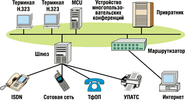
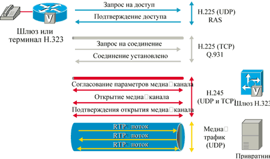
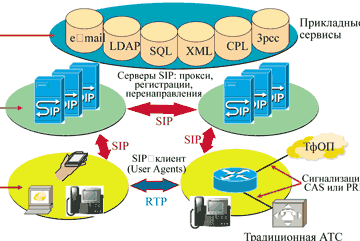
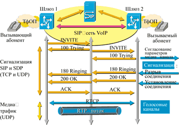
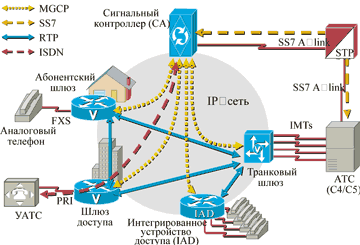
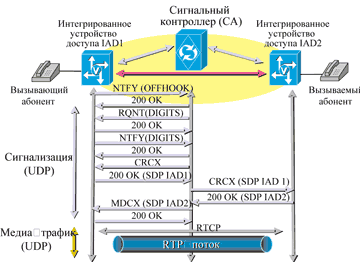

Игорь Масленников,
директор по развитию бизнеса компании CompTek
i.maslennikov@comptek.ru
Короткая, но богатая событиями история развития IP-телефонии привела к тому, что сегодня в реальных сетях VoIP сосуществуют и конкурируют между собой три основных семейства протоколов - H.323, SIP и MGCP. Протоколы всех трех перечисленных семейств регламентируют управление мультимедиа-вызовами и передачу медиа-трафика в IP-сетях, но при этом реализуют три различных подхода к построению систем телефонной сигнализации. Попробуем разобраться, почему сложилась такая ситуация, что представляют собой эти протоколы и каковы перспективы развития каждого из них.
Набор рекомендаций Н.323
Исторически первый и самый распространенный в настоящее время - это введенный Международным союзом электросвязи (МСЭ) набор рекомендаций Н.323 (для простоты будем называть его протоколом). Н.323 стал плодом деятельности разработчиков протоколов мультимедийной связи в сетях ISDN (H.320). Соответствующие работы велись еще c начала 90-х годов, когда никакой IP-телефонии и в помине не было. Первая версия этого протокола была принята МСЭ в 1996 г. и по сути была попыткой перенести телефонную сигнализацию ISDN Q.931 на IP-соединения, т. е. как бы "наложить" традиционную телефонию на сети передачи данных. Рекомендации H.323 достаточно подробно описывают способы организации мультимедийных конференций, охватывая сервисы передачи голоса, видео и компьютерных данных в пакетных сетях с негарантированной доставкой. К настоящему времени принята уже четвертая версия этого набора рекомендаций. К основным компонентам набора относятся описанные ниже протоколы.
H.225 - полный аналог протокола Q.931 в сетях ISDN; описывает процесс установления, поддержки и завершения соединения. Обмен сообщениями происходит по протоколу TCP.
RAS (Registration, Admission, Status) - отвечает за регистрацию устройств в сети, контроль доступа к ресурсам, контроль полосы пропускания, необходимой для сеанса связи, и контроль состояния устройств в сети. Работает по протоколу UDP.
H.245 - отвечает за обмен информацией, необходимой для согласования параметров логических каналов для передачи медиа-потоков, т. е. собственно голоса или видео. Сюда входит, к примеру, согласование кодеков, номеров UDP-портов и т. д. Обмен происходит по протоколу TCP.
H.450.x (появившийся в четвертой версии H.323) - отвечает за обеспечение таких дополнительных или интеллектуальных функций, как Hold, Transfer и т. д.
Архитектура H.323 (рис. 1) весьма проста и состоит всего из четырех функциональных компонентов, ни один из которых не является обязательным.
|  | Рис. 1. Архитектура Н.323.
|
Терминал (H.323 Terminal) - абонентское устройство, способное обеспечивать связь (голосовую, видео- и т. д.) с другими терминалами, шлюзами или устройствами многопользовательских конференций.
Шлюз (H.323 Gateway) - центральное понятие сегодняшней IP-телефонии. Данное устройство обеспечивает взаимное сопряжение телефонной сети с IP-сетью. При этом предоставляется поддержка разных протоколов и интерфейсов сетей обоих типов. Если выход в телефонную сеть не требуется, то данный компонент не нужен, а терминалы могут связываться друг с другом напрямую.
Привратник (H.323 Gatekeeper, GK) - управляющий элемент, "интеллект" H.323 сети, обеспечивающий ее масштабируемость, централизацию управления и настроек, а также трансляцию телефонных префиксов и идентификаторов (H.323 ID) в IP-адреса шлюзов или H.323 терминалов. Кроме того, привратник отвечает за управление доступом (Admission Сontrol) при регистрации шлюзов и терминалов, авторизацию звонков (Call Admission Control), управление полосой пропускания и маршрутизацию вызовов. Привратник управляет подчиненной ему частью сети (зоной) через RAS - протокол общения шлюзов с ним. Предусмотрено объединение привратников в группы, управлять которыми можно с помощью выделенного привратника - Directory Gatekeeper.
Устройство многопользовательских конференций (H.323 Multipoint Conference Unit, MCU) - управляет проведением многопользовательских конференций, согласует параметры соединения всех участников в режиме централизованной, децентрализованной или комбинированной конференции. Возможно переключение или смешивание медиа-потоков.
Обмен сообщениями между компонентами сети H.323 происходит в двоичном формате (ASN.1), для анализа которого нужен транслятор из двоичного формата в текстовый (ASN parser). Что же касается способов адресации, то в рекомендациях H.323 на этот счет определено несколько вариантов:
- телефонные номера в формате E.164, т. е. только символы из набора "0123456789#*,";
- H.323-идентификатор (H323-ID) - произвольный набор символов Unicode;
- универсальный идентификатор ресурса в формате URL (URL-ID);
- IP-адрес с номером порта, например, 10.2.3.4:1720;
- адрес электронной почты (Email-ID).
В наиболее общей форме сценарий соединения по протоколу H.323 выглядит как ряд последовательных шагов (рис. 2). Вначале для установления соединения терминал обнаруживает привратника и регистрируется у него по протоколу RAS. Затем происходит установление сигнального канала по протоколам RAS и H.225. На следующем этапе выполняется согласование параметров оборудования, обмен информацией о его функциональных возможностях и открытие логических каналов по протоколу H.245. Только после этого происходит передача медиа-трафика по протоколам RTP/RTCP, а по ее окончании - завершение соединения.
|  |
| Рис. 2. Сценарий соединения по протоколу H.323.
|
Протокол SIP
Следующий по распространенности протокол IP-телефонии называется SIP (Session Initiation Protocol); он описан в рекомендациях RFC 2543. SIP регламентирует установление и завершение мультимедийных сессий - сеансов связи, в ходе которых пользователи могут говорить друг с другом, обмениваться видеоматериалами и текстом, совместно работать над приложениями и т. д. SIP и сопутствующие ему протоколы родились и развиваются в рамках IETF - главного органа стандартизации Интернета. Первая версия протокола SIP была принята в марте 1999 г., на три года позже, чем H.323, но благодаря интенсивному развитию этого направления сегодня набор рекомендаций RFC (базовых официальных документов IETF), имеющих отношение к SIP-архитектуре, насчитывает десятки, если не сотни документов.
SIP очень похож на протокол HTTP, поскольку разрабатывался по образу и подобию широко известных спецификаций HTTP и SMTP. По сути это клиент-серверный протокол, работа которого состоит из череды запросов и ответов, причем все SIP-заголовки передаются в формате ASCII-текста, а потому легко читаются. Наверняка коды возврата 200 (OK), а особенно 404 (Not found) хорошо знакомы всем пользователям Интернета. SIP позволяет использовать логическую адресацию (URL) на базе протокола TCP или UDP. Проще всего в качестве адреса в сети SIP задавать адреса электронной почты, к примеру, sip:igor@comptek.ru - это самый естественный URL, адекватно понимаемый SIP. При этом допускается применение разнообразных параметров, определяющих функциональность SIP-адреса или тип протокола связи. Например, можно указать, что соединение осуществляется с обычным телефонным номером сети общего пользования - sip:tel:+70957852525, и дополнить его добавочным номером postd=pp521, или определить параметры модемной связи - modem:+70957852526;type=v32b?7e1;type=v110.
SIP имеет несколько комплементарных протоколов, которые служат для реализации дополнительных возможностей. Наиболее важный из них - SDP (Session Description Protocol, RFC 2327), протокол согласования таких параметров сеанса связи, как виды кодеков, номера UDP-портов и т. д. SDP обеспечивает изменение параметров сеанса связи "на ходу", во время сеанса. Перенос сообщений SDP основан на протоколе Session Announcement Protocol (SAP, RFC 2974).
Другой пример комплементарного протокола - SIMPLE (SIP for Instant Messaging and Presence Levering Extension). Фактически это расширение SIP, служащее для предоставления информации о событиях (presence) и для рассылки "мгновенных" сообщений (instant messaging).
Следует также упомянуть SIP-T (Trunk) - протокол переноса сообщений SS7 в виде MIME-объектов между контроллерами сигнализации, а также SIGTRAN (Signaling Transport) - протокол переноса сообщений сигнализации SS7 через IP-сеть.
Архитектура SIP (рис. 3) также очень проста и состоит из нескольких необязательных компонентов.
|  | Рис. 3. Архитектура SIP.
|
Клиент SIP (SIP user agent) - может быть представлен как устройством (IP-телефон, шлюз или другой пользовательский терминал), так и программным приложением для ПК, PDA и т. д. Обычно SIP-клиент содержит и клиентскую, и серверную часть (User Agent Client, или UAC, и User Agent Server, или UAS). Основные функции данного компонента - инициирование и завершение вызовов.
Прокси-сервер SIP - управляет маршрутизацией вызовов и работой приложения. Прокси-сервер не может инициировать или терминировать вызовы.
Redirect-сервер SIP - перенаправляет звонки согласно заданным условиям.
Сервер регистрации SIP (registrar/location) - осуществляет регистрацию пользователей и ведет базу соответствия имен пользователей их адресам, телефонным номерам и т. д.
Еще один важный компонент реальных SIP-сетей, хотя и не входящий формально в архитектуру SIP, - Back-to-Back User Agent (B2BUA). Это своеобразный сервер, представляющий собой два соединенных друг с другом SIP-клиента и поэтому способный инициировать и завершать вызовы.
Из этих компонентов, как из функциональных "кирпичиков", можно строить сети VoIP любой топологии, сложности и масштаба, вплоть до сетей, полностью замещающих функции современных АТС. Можно также создавать совершенно новые сервисы - интеграцию Интернет- и бизнес-приложений, программируемые службы, многоадресный поиск абонента, мультимедийные сервисы, уведомления о событиях и т. д.
В наиболее общей форме сценарий соединения по протоколу SIP с участием прокси-сервера показан на рис. 4. Абонент посылает на прокси-сервер запрос на соединение, отправляя сообщение Invite. Прокси-сервер возвращает сообщение Trying и передает сообщение Invite вызываемому абоненту. Вызываемая сторона отвечает сообщением Ringing, которое прокси-сервер пересылает вызывающей стороне. После того как вызываемый абонент снимет трубку, вызывающей стороне отправляется сообщение ОК, которое транслируется прокси-сервером. Вызываемому абоненту возвращается подтверждающее сообщение Ack.
|  | Рис. 4. Сценарий соединения по протоколу SIP.
|
C этого момента соединение считается установленным и начинается обмен медиа-трафиком по протоколам RTP/RTCP. Сторона, желающая завершить соединение, посылает сообщение Bye, и после получения подтверждающего ОК соединение разрывается.
Этот сценарий очень прост, в нем не участвуют никакие другие серверы (Redirection, Registrar, Location), но он дает представление о схеме взаимодействия функциональных элементов SIP-сети.
Протокол MGCP
Последний из рассматриваемых протоколов IP-телефонии - MGCP (Media Gateway Control Protocol). Точнее, речь здесь идет не об одном протоколе, а о целой группе - SGCP, IPDC, MGCP, MEGACO, H.248. Эти спецификации не только очень схожи концептуально, но и являются "близкими родственниками".
История формирования MGCP началась с создания двух протоколов - SGCP (Simple Gateway Control Protocol, разработка Bellcore и Cisco Systems) и IPDC (Internet Protocol for Device Control, разрабатывался компанией Level 3 при участии многих производителей). Затем SGCP и IPDC были объединены в один протокол, получивший название MGCP. В дальнейшем эволюция MGCP привела к появлению протоколов MEGACO (в рамках IETF) и H.248 (в рамках МСЭ).
Первая версия протокола MGCP (RFC 2705) датирована октябрем 1999 г. Интересно отметить, что MGCP - единственный из трех описываемых здесь протоколов, в работе над которым IETF и МСЭ сотрудничают; именно в результате этого взаимодействия и были созданы протоколы MEGACO и H.248. В то же время существуют и другие реализации MGCP-подобных протоколов, например, фирменный протокол Cisco Systems SSCP (Skinny Station Control Protocol), с помощью которого УАТС Cisco Call Manager управляет IP-телефонами.
Основная идея MGCP очень проста. Она состоит в том, что управление сигнализацией (Call Control) сосредоточено на центральном управляющем устройстве, называемом контроллером сигнализаций (Call Agent, CA), и полностью отделено от медиа-потоков (bearer). Эти потоки обрабатываются "тупыми" шлюзами или абонентскими терминалами, которые способны исполнять лишь ограниченный набор команд, исходящих от управляющего устройства. Архитектура протокола MGCP-сети также очень проста (рис. 5), в ней выделяются всего два функциональных компонента. Первый может быть представлен шлюзом (Media Gateway, MG) или IP-телефоном, а второй - устройством управления вызовами, которое может называться контроллером сигнализаций (CA), контроллером шлюза (Media Gateway Controller, MGC) или программным контроллером (Softswitch, SS). Иногда контроллер сигнализаций представляют в виде двух компонентов - собственно контроллера (Call Agent), выполняющего функции управления шлюзами, и шлюза сигнализации (Signaling Gateway), обеспечивающего обмен сигнальной информацией и согласование между традиционной телефонной сетью и сетью IP.
|  | Рис. 5. Архитектура MGCP.
|
Контроллеры обмениваются со шлюзами (или IP-телефонами) данными в простом текстовом формате (в случае H.248 возможен и бинарный обмен), а функциональное назначение каждого шлюза определяется набором команд, которые он "понимает". Манипулируя наборами команд, можно получать специализированные шлюзы: транковые (Trunking gateways, TGW), абонентские (Residential gateways, RGW), шлюзы доступа (Access gateways, AGW) и т. д.
Контроллер сигнализаций CA воспринимает сеть как набор двух логических элементов - устройств (end-points) и соединений (connections) между ними. Устройства могут быть физическими (например, IP-телефоны или линии на шлюзах) или виртуальными (например, линии к серверам голосовых сообщений). Соединения могут быть ориентированы на передачу голоса, факс-сообщений или данных. Управление этими элементами, т. е. организация соединений между устройствами, происходит путем посылки команд в виде текстовых (ASCII) сообщений по протоколу UDP - при этом может использоваться уже знакомый нам протокол SDP. Как правило, управляющие воздействия контроллера СА инициируются какими-то событиями (events).
Простейший сценарий соединения в концепции MGCP (рис. 6) будет выглядеть следующим образом. Пользователь телефона, подключенного к MGCP-шлюзу, снимает трубку, после чего шлюз сообщает контроллеру об этом событии, а СА дает команду шлюзу включить в телефонную линию сигнал готовности (dial-ton). Теперь пользователь слышит в трубке непрерывный гудок. Набор телефонного номера - тоже последовательность событий для контроллера. Анализируя эти события, СА может установить соединение с другим абонентом в IP-сети или в телефонной сети. Кстати, централизованная обработка сигнализации дает возможность контроллеру прозрачно транслировать сигнализацию SS7 или ISDN из телефонной сети в IP-сеть и, наоборот, получать соответствующие сигнальные сообщения, упакованные в IP-пакеты, а затем анализировать их и манипулировать голосовыми каналами на шлюзах.
|  | Рис. 6. Сценарий соединения по протоколу МGCP.
|
Резюме
Сравнивая "биографические данные" и функциональные особенности трех видов протоколов (см. таблицу), мы видим, что их различия обусловлены историческими причинами, в частности, изменениями представлений о пути развития телекоммуникаций в разное время. При этом H.323 - это технологически устоявшийся, широко распространенный протокол IP-телефонии для операторских сетей и межоператорского обмена, можно сказать, "транзитный" протокол. В свою очередь, SIP - протокол предоставления расширенных голосовых услуг в IP-сетях, который продолжает быстро развиваться, иначе говоря, "абонентский" протокол. Что касается MGCP, то он ориентирован прежде всего на организацию больших операторских узлов сопряжения IP-сетей с ТфОП и сетями SS7.
Сравнение протоколов VoIP-сети
| Показатель | H.323 | SIP | MGCP |
| Клиент | Умный | Умный | Тупой |
| Компонент, определяющий функциональность сети и сетевые сервисы | Привратник | Прокси-сервер | Сигнальный контроллер СА |
| Используемая модель | Телефонная (Q.931) | Интернет (WWW) | Централизованная |
| Протокол передачи сигнализации | TCP* | TCP или UDP | UDP |
| Протокол передачи медиа-трафика | RTP | RTP | RTP |
| Формат сообщений | Двоичный (ASN.1) | Текстовый (ASCII) | Текстовый (ASCII)** |
| Стандартизирующая организация | ITU | IETF | IETF/ITU |
| * Возможна передача по UDP-протоколу; ** возможен двоичный формат сообщений, как в H.248. | |||
Эволюция H.323 позволяет предположить, что будущее развитие IP-телефонии связано не столько с замещением традиционной телефонии, сколько с появлением новых сервисов, которые невозможны в рамках обычной телефонной сети. Однако создавать такие сервисы, используя лишь семейство протоколов H.323, достаточно сложно по сравнению, например, с Интернет-сервисами. Сам процесс разработки на базе H.323, доступный только "телефонным гуру", подчиняется традиционным канонам мира обычной телефонии.
Поэтому весьма вероятно, что протокол SIP, гораздо более понятный и удобный для инженеров-сетевиков и программистов, через некоторое время превратится в протокол некоей новой службы, функции которой далеко выходят за пределы передачи голоса по пакетным сетям. Термин "IP-коммуникации" сейчас можно услышать все чаще. Отличие IP-коммуникаций от телефонии (в том числе от сегодняшней IP-телефонии) как раз и будет состоять в обилии сервисов, о возможности которых мы пока просто не догадываемся.
Как сложится судьба представителей семейства MGCP, пока сказать трудно. Эти протоколы, очевидно, будут востребованы на протяжении переходного периода - от сетей с коммутацией каналов и TDM-сетей к сетям пакетной коммутации (точнее, к IP-сетям). В первую очередь такая востребованность обусловлена возможностью прозрачной интеграции телефонных сетей (особенно SS7) с сетями IP-телефонии. Но дальнейшая перспектива развития протоколов семейства MGCP будет зависеть от того, по какому пути пойдет процесс конвергенции телекоммуникаций - по "интернетному", подразумевающему равноправие сетевых узлов, наличие "умных клиентов" и инновационных сервисов, или по "телефонному", с жесткой иерархией, при которой новые сервисы вводятся только централизованно, и неписаным правилом: чем "тупее" клиент, тем проще жить оператору.
Но в любом случае нас ожидает довольно долгий переходный период, в течение которого и Н.323, и SIP, и MGCP, и какие-то новые, еще не родившиеся протоколы будут сосуществовать в реальных операторских и корпоративных сетях. Практика их использования может меняться со временем, и мы обязательно увидим много интересного и неожиданного на телекоммуникационной сцене в ближайшие годы.